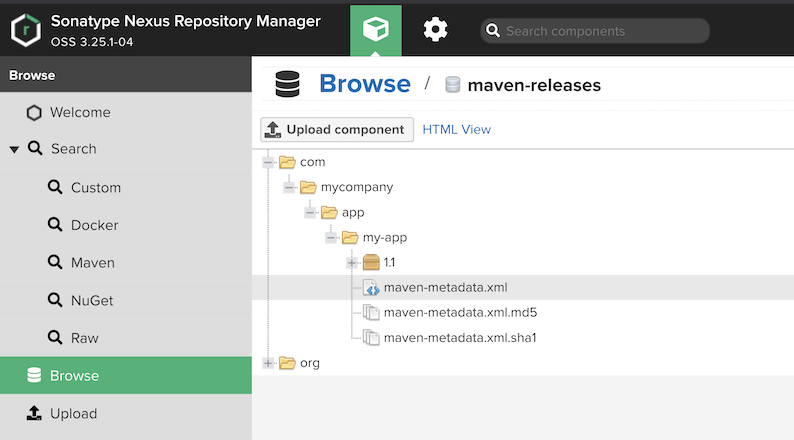
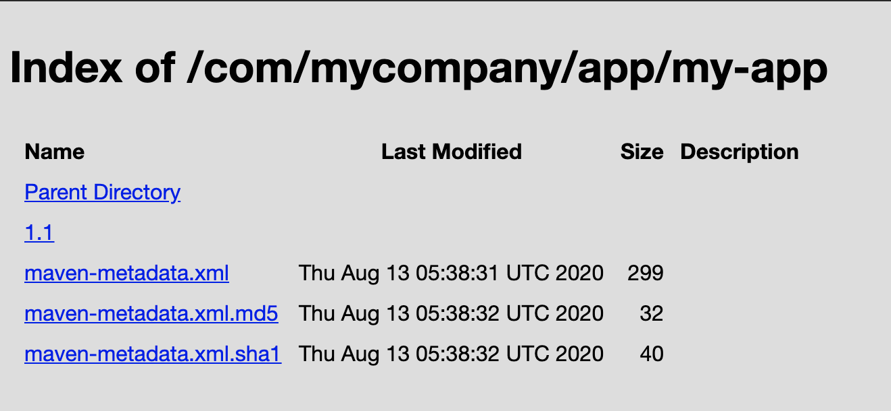
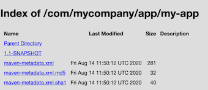
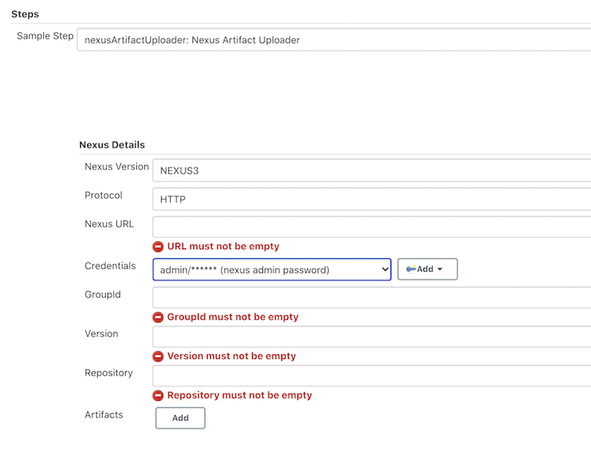
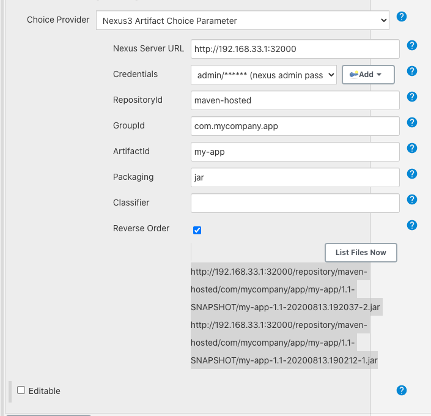
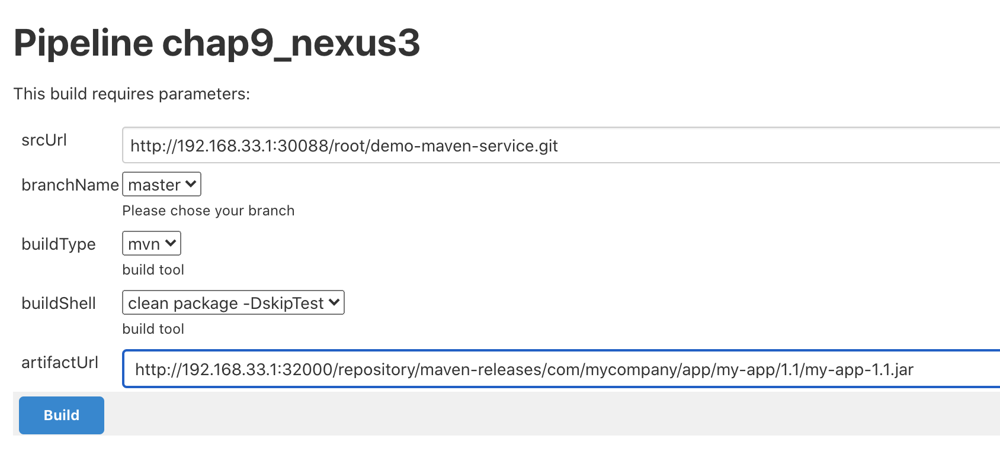
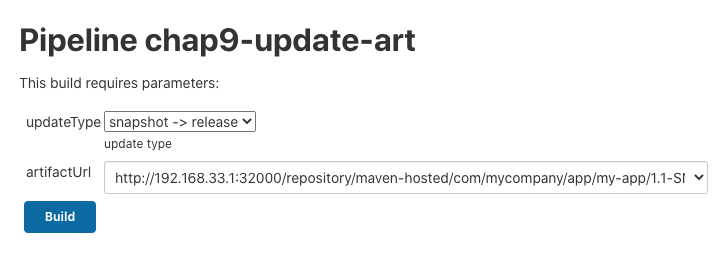
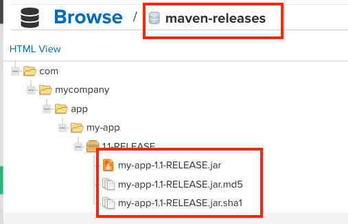
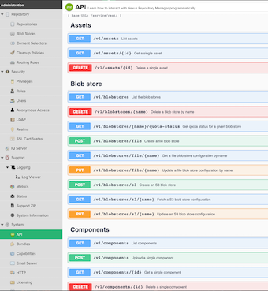
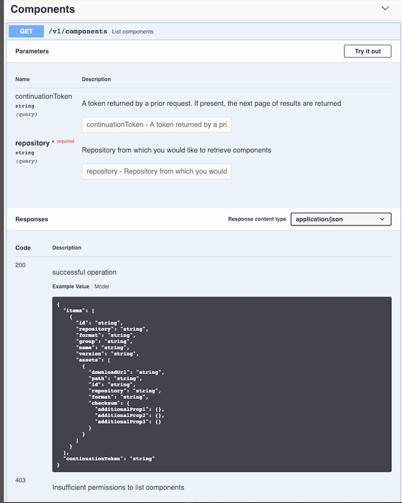

第三节 Nexus 制品上传
1、使用mvn deploy上传制品
- 创建仓库
maven-release(已创建) - 配置
maven-release认证- 在
settings.xml server - 注意
server.id == respository.id
- 在
- 使用
mvn deploy发布
1-1 配置maven-release认证
cd /opt/apache-maven-3.6.3/conf
sudo vim settings.xml
<server>
<id>maven-releases</id>
<username>admin</username>
<password>admin</password>
</server>
<server>
<id>maven-hosted</id>
<username>admin</username>
<password>admin</password>
</server>
1-2 使用mvn deploy发布
def pom =readMavenPom file: 'pom.xml'
pomVersion = "${pom.version}"
pomArtifact = "${pom.artifactId}"
pomPackaging = "${pom.packaging}"
pomGroupId = "${pom.groupId}"
println("${pomGroupId}-${pomArtifact}-${pomVersion}-${pomPackaging}")
def mvnHome = tool "m2"
sh """
cd target/
${mvnHome}/bin/mvn deploy:deploy-file -Dmaven.test.skip=true -Dfile=${jarName} -DgroupId=${pomGroupId} -DartifactId=${pomArtifact} -Dversion=${pomVersion} -Dpackaging=${pomPackaging} -DrepositoryId=maven-releases -Durl=http://192.168.33.1:32000/repository/maven-releases/
"""
Error: 400 repository version policy: release does not allow version
修改pom.xml里面的version信息
<version>1.1-SNAPSHOT</version> => `<version>1.1</version>
stage('Build') {
steps {
script {
build.Build(buildType,buildShell)
def jarName = sh returnStdout: true, script: "cd target; ls *.jar"
jarName = jarName - "\n"
def pom =readMavenPom file: 'pom.xml'
pomVersion = "${pom.version}"
pomArtifact = "${pom.artifactId}"
pomPackaging = "${pom.packaging}"
pomGroupId = "${pom.groupId}"
println("${pomGroupId}-${pomArtifact}-${pomVersion}-${pomPackaging}")
def mvnHome = tool "m2"
sh """
cd target/
${mvnHome}/bin/mvn deploy:deploy-file -Dmaven.test.skip=true -Dfile=${jarName} -DgroupId=${pomGroupId} -DartifactId=${pomArtifact} -Dversion=${pomVersion} -Dpackaging=${pomPackaging} -DrepositoryId=maven-releases -Durl=http://192.168.33.1:32000/repository/maven-releases/
"""
}
}
}
1-3 Console output
....
+ cd target/
+ /opt/maven/bin/mvn deploy:deploy-file -Dmaven.test.skip=true -Dfile=my-app-1.1.jar -DgroupId=com.mycompany.app -DartifactId=my-app -Dversion=1.1 -Dpackaging=jar -DrepositoryId=maven-releases -Durl=http://192.168.33.1:32000/repository/maven-releases/
[INFO] Scanning for projects...
[INFO]
[INFO] ------------------< org.apache.maven:standalone-pom >-------------------
[INFO] Building Maven Stub Project (No POM) 1
[INFO] --------------------------------[ pom ]---------------------------------
[INFO]
[INFO] --- maven-deploy-plugin:2.7:deploy-file (default-cli) @ standalone-pom ---
Uploading to maven-releases: http://192.168.33.1:32000/repository/maven-releases/com/mycompany/app/my-app/1.1/my-app-1.1.jar
Progress (1): 2.6 kB
Uploaded to maven-releases: http://192.168.33.1:32000/repository/maven-releases/com/mycompany/app/my-app/1.1/my-app-1.1.jar (2.6 kB at 3.4 kB/s)
Uploading to maven-releases: http://192.168.33.1:32000/repository/maven-releases/com/mycompany/app/my-app/1.1/my-app-1.1.pom
Progress (1): 395 B
Uploaded to maven-releases: http://192.168.33.1:32000/repository/maven-releases/com/mycompany/app/my-app/1.1/my-app-1.1.pom (395 B at 914 B/s)
Downloading from maven-releases: http://192.168.33.1:32000/repository/maven-releases/com/mycompany/app/my-app/maven-metadata.xml
Uploading to maven-releases: http://192.168.33.1:32000/repository/maven-releases/com/mycompany/app/my-app/maven-metadata.xml
Progress (1): 299 B
Uploaded to maven-releases: http://192.168.33.1:32000/repository/maven-releases/com/mycompany/app/my-app/maven-metadata.xml (299 B at 466 B/s)
[INFO] ------------------------------------------------------------------------
[INFO] BUILD SUCCESS
[INFO] ------------------------------------------------------------------------
[INFO] Total time: 3.295 s
[INFO] Finished at: 2020-08-04T09:49:11Z
[INFO] ------------------------------------------------------------------------
...


1-4 方法二： 建立新的mixed类型的maven-hosted repository
def mvnHome = tool "m2"
sh """
cd target/
${mvnHome}/bin/mvn deploy:deploy-file -Dmaven.test.skip=true -Dfile=${jarName} -DgroupId=${pomGroupId} -DartifactId=${pomArtifact} -Dversion=${pomVersion} -Dpackaging=${pomPackaging} -DrepositoryId=maven-releases -Durl=http://192.168.33.1:32000/repository/maven-hosted/
"""

2、使用 Jenkins 插件上传制品
- 安装
nexus artifact uploader插件 nexus artifact uploader - 使用片段生成器生成DSL

nexusArtifactUploader artifacts: [[artifactId: "${pomArtifact}",
classifier: '',
file: "${filePath}",
type: "${pomPackaging}"]],
credentialsId: 'nexus',
groupId: "${pomGroupId}",
nexusUrl: '192.168.33.1:32000',
nexusVersion: 'nexus3',
protocol: 'http',
repository: "${repoName}",
version: "${pomVersion}"
Console Output
[Pipeline] nexusArtifactUploader
Uploading artifact my-app-1.1-SNAPSHOT.jar started....
GroupId: com.mycompany.app
ArtifactId: com.mycompany.app
Classifier:
Type: jar
Version: 1.1-SNAPSHOT
File: my-app-1.1-SNAPSHOT.jar
Repository:maven-hosted
Downloading: http://192.168.33.1:32000/repository/maven-hosted/com/mycompany/app/my-app/1.1-SNAPSHOT/maven-metadata.xml
100 % completed (767 B / 767 B).
Downloaded: http://192.168.33.1:32000/repository/maven-hosted/com/mycompany/app/my-app/1.1-SNAPSHOT/maven-metadata.xml (767 B at 666 B/s)
Uploading: http://192.168.33.1:32000/repository/maven-hosted/com/mycompany/app/my-app/1.1-SNAPSHOT/my-app-1.1-20200813.192037-2.jar
2-1 Nexus方法置于 SharedLibrary
JenkinslibTest/src/org/devops/nexus.groovy
pakcage org.devops
//获取POM中的坐标
def GetGav(){
//上传制品
def jarName = sh returnStdout: true, script: "cd target;ls *.jar"
env.jarName = jarName - "\n"
def pom = readMavenPom file: 'pom.xml'
env.pomVersion = "${pom.version}"
env.pomArtifact = "${pom.artifactId}"
env.pomPackaging = "${pom.packaging}"
env.pomGroupId = "${pom.groupId}"
println("${pomGroupId}-${pomArtifact}-${pomVersion}-${pomPackaging}")
return ["${pomGroupId}","${pomArtifact}","${pomVersion}","${pomPackaging}"]
}
//Nexus plugin deploy
def NexusUpload(){
//use nexus plugin
nexusArtifactUploader artifacts: [[artifactId: "${pomArtifact}",
classifier: '',
file: "${filePath}",
type: "${pomPackaging}"]],
credentialsId: 'nexus',
groupId: "${pomGroupId}",
nexusUrl: '192.168.33.1:32000',
nexusVersion: 'nexus3',
protocol: 'http',
repository: "${repoName}",
version: "${pomVersion}"
}
//mvn deploy
def MavenUpload(){
def mvnHome = tool "m2"
sh """
cd target/
${mvnHome}/bin/mvn deploy:deploy-file -Dmaven.test.skip=true \
-Dfile=${jarName} -DgroupId=${pomGroupId} \
-DartifactId=${pomArtifact} -Dversion=${pomVersion} \
-Dpackaging=${pomPackaging} -DrepositoryId=maven-hosted \
-Durl=http://192.168.33.1:32000/repository/maven-hosted
"""
}
def main(uploadType){
GetGav()
if ("${uploadType}" == "maven"){
MavenUpload()
} else if ("${uploadType}" == "nexus") {
env.repoName = "maven-hosted"
env.filePath = "target/${jarName}"
NexusUpload()
}
}
-
三个方法：
GetGav()： 获取POM中的坐标NexusUpload(): Nexus plugin deployMavenUpload()mvn deploy
-
更新
pom.xml的version版本
#!groovy
@Library('jenkinslib@master') _
def build = new org.devops.buildtools()
def sonar = new org.devops.sonarqube()
def nexus = new org.devops.nexus()
pipeline {
agent { node { label "hostmachine" }}
parameters {
string(name: 'srcUrl', defaultValue: 'http://192.168.33.1:30088/root/demo-maven-service.git', description: '')
choice(name: 'branchName', choices: 'master\nstage\ndev', description: 'Please chose your branch')
choice(name: 'buildType', choices: 'mvn', description: 'build tool')
choice(name: 'buildShell', choices: 'clean package -DskipTest\n--version', description: 'build tool')
}
stages{
stage('Checkout') {
steps {
script {
checkout([$class: 'GitSCM', branches: [[name: "${branchName}"]], doGenerateSubmoduleConfigurations: false, extensions: [], submoduleCfg: [], userRemoteConfigs: [[credentialsId: 'gitlab-admin-user', url: "${srcUrl}"]]])
}
}
}
stage('Build') {
steps {
script {
build.Build(buildType,buildShell)
nexus.main("maven")
<!--nexus.main("nexus")-->
}
}
}
}
}
def nexus = new org.devops.nexus()nexus.main("maven")ornexus.main("nexus")
Console output maven
+ cd target/
+ /opt/maven/bin/mvn deploy:deploy-file -Dmaven.test.skip=true -Dfile=my-app-1.1-RELEASE.jar -DgroupId=com.mycompany.app -DartifactId=my-app -Dversion=1.1-RELEASE -Dpackaging=jar -DrepositoryId=hosted -Durl=http://192.168.33.1:32000/repository/maven-hosted
[INFO] Scanning for projects...
[INFO]
[INFO] ------------------< org.apache.maven:standalone-pom >-------------------
[INFO] Building Maven Stub Project (No POM) 1
[INFO] --------------------------------[ pom ]---------------------------------
[INFO]
[INFO] --- maven-deploy-plugin:2.7:deploy-file (default-cli) @ standalone-pom ---
Uploading to maven-releases: http://192.168.33.1:32000/repository/maven-releases/com/mycompany/app/my-app/1.1-RELEASE/my-app-1.1-RELEASE.jar
Progress (1): 2.6 kB
...
3、使用 Nexus 插件上传制品
-
安装
Nexus插件上传制品 https://plugins.jenkins.io/nexus-artifact-uploader/ -
Name:
artifactUrl - Nexus Server URL:
http://192.168.33.1:32000 - RepositoryId:
maven-hosted - GroupId:
com.mycompany.app - ArtifactId:
my-app -
Packaging:
jar -
http://192.168.33.1:32000/repository/maven-hosted/com/mycompany/app/my-app/1.1-SNAPSHOT/my-app-1.1-20200813.192037-2.jar
- http://192.168.33.1:32000/repository/maven-hosted/com/mycompany/app/my-app/1.1-SNAPSHOT/my-app-1.1-20200813.190212-1.jar

#!groovy
@Library('jenkinslib@master') _
def build = new org.devops.buildtools()
def sonar = new org.devops.sonarqube()
def nexus = new org.devops.nexus()
String artifactUrl = "${env.artifactUrl}"
pipeline {
agent { node { label "hostmachine" }}
parameters {
string(name: 'srcUrl', defaultValue: 'http://192.168.33.1:30088/root/demo-maven-service.git', description: '')
choice(name: 'branchName', choices: 'master\nstage\ndev', description: 'Please chose your branch')
choice(name: 'buildType', choices: 'mvn', description: 'build tool')
choice(name: 'buildShell', choices: 'clean package -DskipTest\n--version', description: 'build tool')
}
stages{
stage('Checkout') {
steps {
script {
checkout([$class: 'GitSCM', branches: [[name: "${branchName}"]], doGenerateSubmoduleConfigurations: false, extensions: [], submoduleCfg: [], userRemoteConfigs: [[credentialsId: 'gitlab-admin-user', url: "${srcUrl}"]]])
}
}
}
stage('Build') {
steps {
script {
build.Build(buildType,buildShell)
// Upload artifact
// nexus.main("nexus")
// Release artifact
sh "wget ${artifactUrl} && ls"
}
}
}
}
}

Console output
+ wget http://192.168.33.1:32000/repository/maven-hosted/com/mycompany/app/my-app/1.1-SNAPSHOT/my-app-1.1-20200813.190212-1.jar
--2020-08-13 19:25:39-- http://192.168.33.1:32000/repository/maven-hosted/com/mycompany/app/my-app/1.1-SNAPSHOT/my-app-1.1-20200813.190212-1.jar
Connecting to 192.168.33.1:32000... connected.
HTTP request sent, awaiting response... 200 OK
Length: 2626 (2.6K) [application/java-archive]
Saving to: ‘my-app-1.1-20200813.190212-1.jar’
0K .. 100% 286M=0s
2020-08-13 19:25:39 (286 MB/s) - ‘my-app-1.1-20200813.190212-1.jar’ saved [2626/2626]
+ ls
ci.jenkinsfile
jenkins
Jenkinsfile
my-app-1.1-20200813.190212-1.jar
my-app-1.1.jar
pom.xml
README.md
src
4、制品晋级
- 安装
Maven Artifact ChoiceList Provider (Nexus)插件 - 用户选择要晋级的制品
- 解析生成坐标
- 上传到发布仓库
4-1 nexus.groovy
pakcage org.devops
//获取POM中的坐标
def GetGav(){
//上传制品
def jarName = sh returnStdout: true, script: "cd target;ls *.jar"
env.jarName = jarName - "\n"
def pom = readMavenPom file: 'pom.xml'
env.pomVersion = "${pom.version}"
env.pomArtifact = "${pom.artifactId}"
env.pomPackaging = "${pom.packaging}"
env.pomGroupId = "${pom.groupId}"
println("${pomGroupId}-${pomArtifact}-${pomVersion}-${pomPackaging}")
return ["${pomGroupId}","${pomArtifact}","${pomVersion}","${pomPackaging}"]
}
//Nexus plugin deploy
def NexusUpload(){
//use nexus plugin
nexusArtifactUploader artifacts: [[artifactId: "${pomArtifact}",
classifier: '',
file: "${filePath}",
type: "${pomPackaging}"]],
credentialsId: 'nexus',
groupId: "${pomGroupId}",
nexusUrl: '192.168.33.1:32000',
nexusVersion: 'nexus3',
protocol: 'http',
repository: "${repoName}",
version: "${pomVersion}"
}
//mvn deploy
def MavenUpload(){
def mvnHome = tool "m2"
sh """
cd target/
${mvnHome}/bin/mvn deploy:deploy-file -Dmaven.test.skip=true \
-Dfile=${jarName} -DgroupId=${pomGroupId} \
-DartifactId=${pomArtifact} -Dversion=${pomVersion} \
-Dpackaging=${pomPackaging} -DrepositoryId=maven-hosted \
-Durl=http://192.168.33.1:32000/repository/maven-hosted
"""
}
//制品晋级
def ArtifactUpdate(updateType,artifactUrl){
//晋级策略
if ("${updateType}" == "snapshot -> release"){
println("snapshot -> release")
//下载原始制品
sh " rm -fr updates && mkdir updates && cd updates && wget ${artifactUrl} && ls -l "
//获取artifactID
artifactUrl = artifactUrl - "http://192.168.33.1:32000/repository/maven-hosted/"
artifactUrl = artifactUrl.split("/").toList()
println(artifactUrl.size())
env.jarName = artifactUrl[-1]
env.pomVersion = artifactUrl[-2].replace("SNAPSHOT","RELEASE")
env.pomArtifact = artifactUrl[-3]
pomPackaging = artifactUrl[-1]
pomPackaging = pomPackaging.split("\\.").toList()[-1]
env.pomPackaging = pomPackaging[-1]
env.pomGroupId = artifactUrl[0..-4].join(".")
println("${pomGroupId}##${pomArtifact}##${pomVersion}##${pomPackaging}")
env.newJarName = "${pomArtifact}-${pomVersion}.${pomPackaging}"
//更改名称
sh " cd updates && mv ${jarName} ${newJarName} "
//上传制品
env.repoName = "maven-releases"
env.filePath = "updates/${newJarName}"
NexusUpload()
}
}
def main(uploadType){
GetGav()
if ("${uploadType}" == "maven"){
MavenUpload()
} else if ("${uploadType}" == "nexus") {
env.repoName = "maven-hosted"
env.filePath = "target/${jarName}"
NexusUpload()
}
}
def ArtifactUpdate(updateType,artifactUrl){}
4-2 Pipeline Script
#!groovy
@Library('jenkinslib@master') _
def nexus = new org.devops.nexus()
String artifactUrl = "${env.artifactUrl}"
pipeline{
agent { node { label "hostmachine" }}
parameters {
choice(name: 'updateType', choices: 'snapshot -> release\n', description: 'update type')
}
stages{
stage("UpdateArtifact"){
steps{
script{
println(artifactUrl)
updateType = "${env.updateType}"
println(updateType)
nexus.ArtifactUpdate(updateType,artifactUrl)
}
}
}
}
}

Console output
[Pipeline] echo
http://192.168.33.1:32000/repository/maven-hosted/com/mycompany/app/my-app/1.1-SNAPSHOT/my-app-1.1-20200813.192037-2.jar
[Pipeline] echo
snapshot -> release
[Pipeline] echo
snapshot -> release
[Pipeline] sh
+ rm -fr updates
+ mkdir updates
+ cd updates
+ wget http://192.168.33.1:32000/repository/maven-hosted/com/mycompany/app/my-app/1.1-SNAPSHOT/my-app-1.1-20200813.192037-2.jar
--2020-08-13 20:30:46-- http://192.168.33.1:32000/repository/maven-hosted/com/mycompany/app/my-app/1.1-SNAPSHOT/my-app-1.1-20200813.192037-2.jar
Connecting to 192.168.33.1:32000... connected.
HTTP request sent, awaiting response... 200 OK
Length: 2626 (2.6K) [application/java-archive]
Saving to: ‘my-app-1.1-20200813.192037-2.jar’
0K .. 100% 277M=0s
2020-08-13 20:30:46 (277 MB/s) - ‘my-app-1.1-20200813.192037-2.jar’ saved [2626/2626]
+ ls -l
total 4
-rw-rw-r--. 1 vagrant vagrant 2626 Aug 14 2020 my-app-1.1-20200813.192037-2.jar
[Pipeline] echo
11
[Pipeline] echo
http:..192.168.33.1:32000.repository.maven-hosted.com.mycompany.app##my-app##1.1-RELEASE##jar
[Pipeline] sh
+ cd updates
+ mv my-app-1.1-20200813.192037-2.jar my-app-1.1-RELEASE.jar
[Pipeline] nexusArtifactUploader

5、封装 Nexus REST API
5-1 Nexus REST API
service/reset/v1/components/${id}
Example
http://192.168.33.1:32000/service/rest/v1/components?repository=maven-hosted
{
"items" : [ {
"id" : "bWF2ZW4taG9zdGVkOmM3NzAxNjljMGIyZTNlZDg1MGQ0M2ZlOGUzZTE0ZGY1",
"repository" : "maven-hosted",
"format" : "maven2",
"group" : "com.mycompany.app",
"name" : "my-app",
"version" : "1.1-20200813.190212-1",
"assets" : [ {
"downloadUrl" : "http://192.168.33.1:32000/repository/maven-hosted/com/mycompany/app/my-app/1.1-SNAPSHOT/my-app-1.1-20200813.190212-1.jar",
"path" : "com/mycompany/app/my-app/1.1-SNAPSHOT/my-app-1.1-20200813.190212-1.jar",
"id" : "bWF2ZW4taG9zdGVkOjM2ZTNkZWM4ZGU1MjhjOWI3MDkyYTJlYTJlYjAxYTlm",
"repository" : "maven-hosted",
"format" : "maven2",
"checksum" : {
"sha1" : "98b32769384f208997d0e6ce52157864e5af010d",
"md5" : "933ce8391a4224771a77f19dd21bd66f"
}
}, {
"downloadUrl" : "http://192.168.33.1:32000/repository/maven-hosted/com/mycompany/app/my-app/1.1-SNAPSHOT/my-app-1.1-20200813.190212-1.jar.md5",
"path" : "com/mycompany/app/my-app/1.1-SNAPSHOT/my-app-1.1-20200813.190212-1.jar.md5",
"id" : "bWF2ZW4taG9zdGVkOjM2ZTNkZWM4ZGU1MjhjOWIxOWY2NWRjZjU4MTdlOWEx",
"repository" : "maven-hosted",
"format" : "maven2",
"checksum" : {
"sha1" : "f949e7f01cda8178bb6c84c57ff9a21534217f36",
"md5" : "7c1adfe9d1980b88a09e5f384cf2952c"
}
}, {
"downloadUrl" : "http://192.168.33.1:32000/repository/maven-hosted/com/mycompany/app/my-app/1.1-SNAPSHOT/my-app-1.1-20200813.190212-1.jar.sha1",
"path" : "com/mycompany/app/my-app/1.1-SNAPSHOT/my-app-1.1-20200813.190212-1.jar.sha1",
"id" : "bWF2ZW4taG9zdGVkOjM2ZTNkZWM4ZGU1MjhjOWIwZGExY2M2OWIyZDhkNjZl",
"repository" : "maven-hosted",
"format" : "maven2",
"checksum" : {
"sha1" : "1f6f7277f9f5c966771756cf00db8b9cbeb1623b",
"md5" : "0d529b4a86c0f6066a015b9e5e484dcc"
}
}, {
"downloadUrl" : "http://192.168.33.1:32000/repository/maven-hosted/com/mycompany/app/my-app/1.1-SNAPSHOT/my-app-1.1-20200813.190212-1.pom",
"path" : "com/mycompany/app/my-app/1.1-SNAPSHOT/my-app-1.1-20200813.190212-1.pom",
"id" : "bWF2ZW4taG9zdGVkOjM2ZTNkZWM4ZGU1MjhjOWI3Y2M0ZTc0NGMxM2VmMDI5",
"repository" : "maven-hosted",
"format" : "maven2",
"checksum" : {
"sha1" : "511692613d6474109a227c282b79adb6bb6a282c",
"md5" : "1d2fd7c19cbd1bd2e4481b3b9b6d5a6c"
}
}, {
...


4-1 nexusapi.groovy
package org.devops
//封装HTTP
def HttpReq(reqType,reqUrl,reqBody){
def sonarServer = "http://192.168.33.1:32000/service/rest"
result = httpRequest authentication: 'nexus',
httpMode: reqType,
contentType: "APPLICATION_JSON",
consoleLogResponseBody: true,
ignoreSslErrors: true,
requestBody: reqBody,
url: "${sonarServer}/${reqUrl}",
quiet: true
return result
}
//获取仓库中所有组件
def GetRepoComponents(repoName){
apiUrl = "/v1/components?repository=${repoName}"
response = HttpReq("GET",apiUrl,'')
response = readJSON text: """${response.content}"""
println(response["items"].size())
return response["items"]
}
//获取单件组件
def GetComponentsId(repoName,groupId,artifactId,version){
println("获取单件组件ID")
result = GetRepoComponents(repoName)
for (component in result){
if (component["group"] == groupId && component["name"] == artifactId && component["version"] == version ){
componentId = component["id"]
return componentId
}
}
println(componentId)
}
//获取组件信息
def GetSingleComponents(repoName,groupId,artifactId,version){
println("获取单件组件信息")
componentId = GetComponentsId(repoName,groupId,artifactId,version)
apiUrl = "/v1/components/${componentId}"
response = HttpReq("GET",apiUrl,'')
response = readJSON text: """${response.content}"""
println(response["assets"]["downloadUrl"])
}
- 封装HTTP
- 获取仓库中所有组件
- 获取单件组件
- 获取组件信息
4-2 获取仓库中所有组件
#!groovy
@Library('jenkinslib@master') _
def nexus = new org.devops.nexus()
def nexusapi = new org.devops.nexusapi()
String artifactUrl = "${env.artifactUrl}"
pipeline{
agent { node { label "hostmachine" }}
stages{
stage("UpdateArtifact"){
steps{
script{
nexusapi.GetRepoComponents("maven-hosted")
}
}
}
}
}
Console Output
[Pipeline] stage
[Pipeline] { (GetRepoComponents)
[Pipeline] script
[Pipeline] {
[Pipeline] httpRequest
[Pipeline] readJSON
[Pipeline] echo
5
[Pipeline] }
[Pipeline] // script
[Pipeline] }
[Pipeline] // stage
[Pipeline] }
[Pipeline] // node
[Pipeline] End of Pipeline
Finished: SUCCESS
4-3 组件信息
#!groovy
@Library('jenkinslib@master') _
def nexus = new org.devops.nexus()
def nexusapi = new org.devops.nexusapi()
pipeline{
agent { node { label "hostmachine" }}
parameters {
string(name: 'pkgVersion', defaultValue: "1.1-20200813.190212-1", description: '')
}
stages{
stage("GetSingleComponents"){
steps{
script{
pkgVersion = "${env.pkgVersion}"
nexusapi.GetRepoComponents("maven-hosted")
nexusapi.GetSingleComponents("maven-hosted","com.mycompany.app","my-app",pkgVersion)
}
}
}
}
}
Console Output
[Pipeline] {
[Pipeline] httpRequest
[Pipeline] readJSON
[Pipeline] echo
5
[Pipeline] echo
获取单件组件信息
[Pipeline] echo
获取单件组件ID
[Pipeline] httpRequest
[Pipeline] readJSON
[Pipeline] echo
5
[Pipeline] httpRequest
[Pipeline] readJSON
[Pipeline] echo
[http://192.168.33.1:32000/repository/maven-hosted/com/mycompany/app/my-app/1.1-SNAPSHOT/my-app-1.1-20200813.190212-1.jar, http://192.168.33.1:32000/repository/maven-hosted/com/mycompany/app/my-app/1.1-SNAPSHOT/my-app-1.1-20200813.190212-1.jar.md5, http://192.168.33.1:32000/repository/maven-hosted/com/mycompany/app/my-app/1.1-SNAPSHOT/my-app-1.1-20200813.190212-1.jar.sha1, http://192.168.33.1:32000/repository/maven-hosted/com/mycompany/app/my-app/1.1-SNAPSHOT/my-app-1.1-20200813.190212-1.pom, http://192.168.33.1:32000/repository/maven-hosted/com/mycompany/app/my-app/1.1-SNAPSHOT/my-app-1.1-20200813.190212-1.pom.md5, http://192.168.33.1:32000/repository/maven-hosted/com/mycompany/app/my-app/1.1-SNAPSHOT/my-app-1.1-20200813.190212-1.pom.sha1]
[Pipeline] }
[Pipeline] // script
[Pipeline] }
[Pipeline] // stage
[Pipeline] }
[Pipeline] // node
[Pipeline] End of Pipeline
Finished: SUCCESS